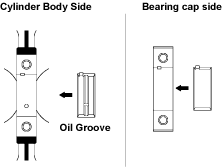

- Use a hammer grip to push the piston in until the connecting rod makes contact with the crankpin.

- At the same time, rotate the crankshaft until the crankpin is at BDC.
- Install the connecting rod bearing caps. The bearing cap number (at the side of the bearing cap) and the connecting rod number must be the same.
NOTE: It is absolutely essential that the bearing caps be installed in the correct direction. Reversing the bearing cap direction will result in serious engine damage.

- Apply a coat of engine oil to the threads and setting faces of each connecting rod cap bolt.
- Tighten the connecting rod cap nuts to the two steps specified torque.
1st step torque:
25 Nm (2.5 kgf/m, 18 lbf/ft)
2nd step:
100°
Special Tools Required
- Crankshaft rear oil seal installer (without crankshaft) 5-8840-7005-0
- Crankshaft rear oil seal installer (with crankshaft) 5-8840-7006-0
- Use compressed air to thoroughly clean the inside and outside surfaces of the cylinder block, the oil holes and the water jackets.
Wear safety glasses when using compressed air, as flying dirt particles may cause eye injury. |
 CAUTION
CAUTION
- Install crankshaft upper bearing.
NOTE: The crankshaft upper bearings have an oil hole and an oil groove. The lower bearings do not.

- Carefully wipe any foreign material from the crankshaft upper bearing and the crankshaft upper bearing fitting surfaces.
- Locate the position mark applied at disassembly if the removed crankshaft upper bearings are to be reused.
- Install the crankshaft. Apply an ample coat of engine oil to the crankshaft journals and the crankshaft bearing surfaces before installing the crankshaft.
NOTE: Do not apply engine oil to the bearing back faces and the cylinder block bearing fitting surfaces.